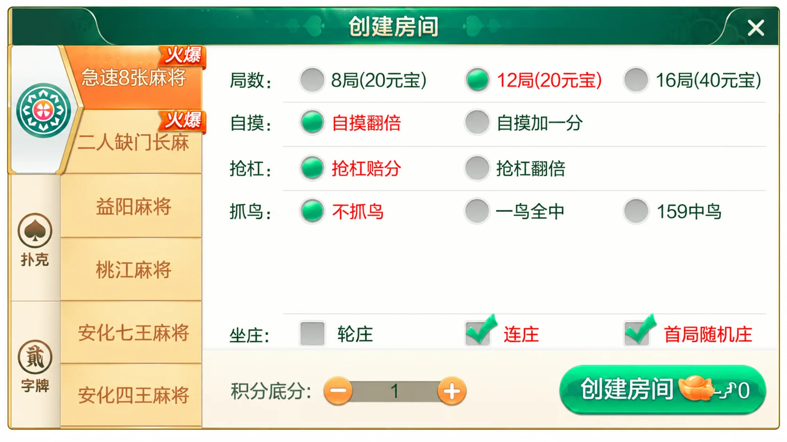
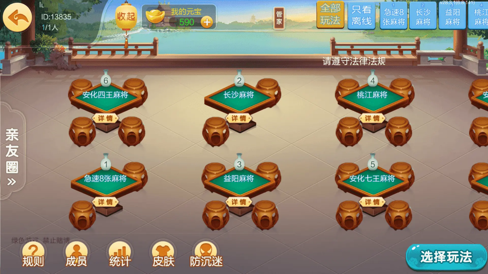

七星系列 · 地区界面与技术笔记
七星益阳：多玩法目录与名称核对
从21项清单与菜单写法差异出发，讨论原名保留、别名核对和稳定标识。
21项清单如何拆开阅读
益阳版本的公开介绍列出21项：麻将10项、字牌4项、扑克7项。麻将包括益阳、桃江、沅江、长沙等名称；字牌包括益阳歪胡子、南县鬼胡子和沅江鬼胡子；扑克部分列有沅江千分、掂坨、跑得快、斗地主及三打哈等。清单覆盖的是入口名称，不能据此推断每项都有独立服务或完全不同的规则引擎。
这里最值得核对的细节是名称差异：文字清单写作“安华七王麻将”“安华四王麻将”，配图菜单则显示“安化七王麻将”“安化四王麻将”。本文按画面描述菜单，不把这两种写法直接算作四种玩法，也不在缺乏确认时断言它们是同一实现。
菜单与桌台的名称一致性
创建房间面板以麻将、扑克、字牌分组，具体游戏再列在纵向菜单中。桌台页同时出现益阳麻将、桃江麻将、安化七王麻将和安化四王麻将等名称。这种多入口结构需要稳定的内部标识，避免把显示文字直接当作配置键。




规则面板为AI整理的截图局部，并非未经修改的原始截图；桌台图仅做格式压缩。群组ID13835保留为群组标识，没有改成用户ID。画面中的元宝和积分标签保留原貌，其获取或兑换机制未核实，不能据此宣称为纯房卡模式。
保留原名，再引入经核对的别名
资料整理可以保存原始名称、展示名称以及是否经过人工核对三个字段。未经核对时继续展示原名；有明确版本证据后才添加映射。相似字、同音字和地区简称都不宜自动合并，否则一处拼写修正可能把不同玩法的配置合并到一起。
下面是独立编写的名称整理示例，不是原工程代码。它只读取调用方提供的映射，不自行判断“安华”和“安化”的关系，不涉及游戏结果或交易。示例中的“旧称”仅为测试数据。
export function resolveName(name, reviewedAliases = new Map()) {
if (typeof name !== 'string' || !name.trim()) throw new TypeError('Invalid name');
const raw = name.trim();
const resolved = reviewedAliases.get(raw);
if (resolved !== undefined && (typeof resolved !== 'string' || !resolved.trim()))
throw new TypeError('Invalid reviewed alias');
return { raw, display: resolved?.trim() ?? raw, reviewed: resolved !== undefined };
}
独立示例文件通过10项断言，覆盖原名保留、已核对映射、未知名称和无效输入。用于页面时，应把输出作为文本节点展示，避免直接拼接HTML。
如果随后确认了别名关系，可另存核对日期和适用版本；旧记录仍保留原始名称，检索界面同时展示标准名称。这样的迁移方式不会依靠改动历史截图来制造一致性。
本文的边界
本文讨论益阳版本的菜单组织与资料名称核对，没有验证21项玩法的完整规则，也没有取得或运行第三方工程。数据库结构、网络同步方式和客户端技术栈均不从截图推断；可运行性与实际运营模式也需要独立验证。